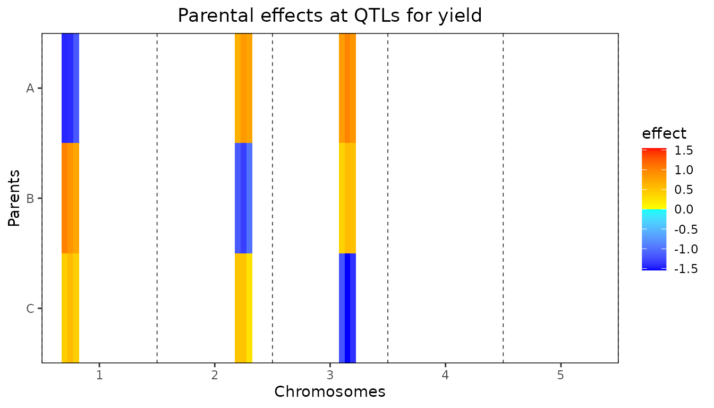
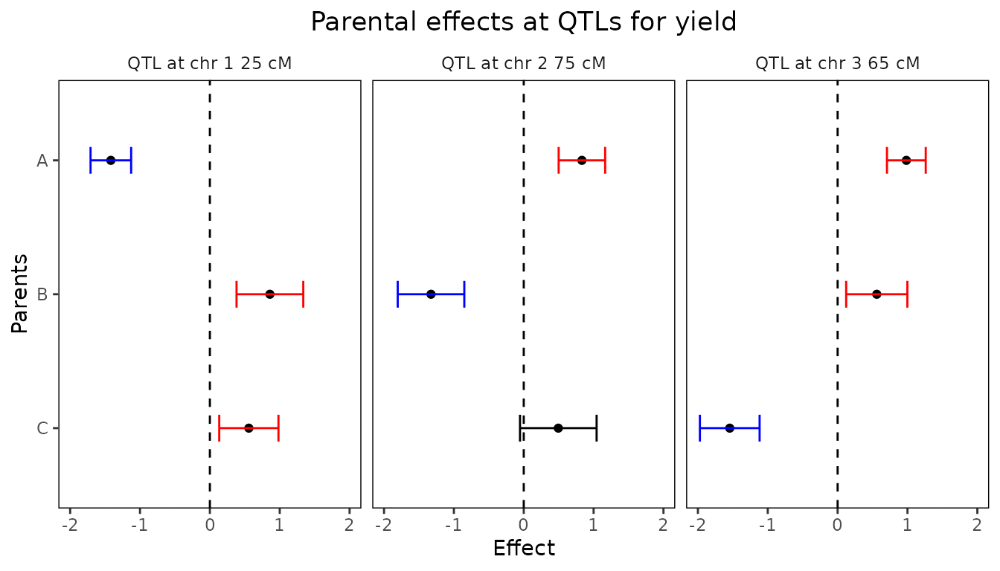
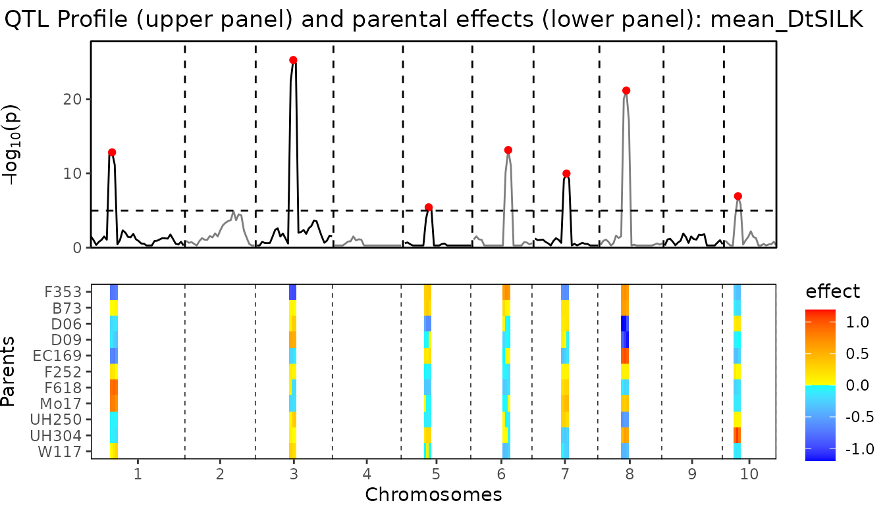
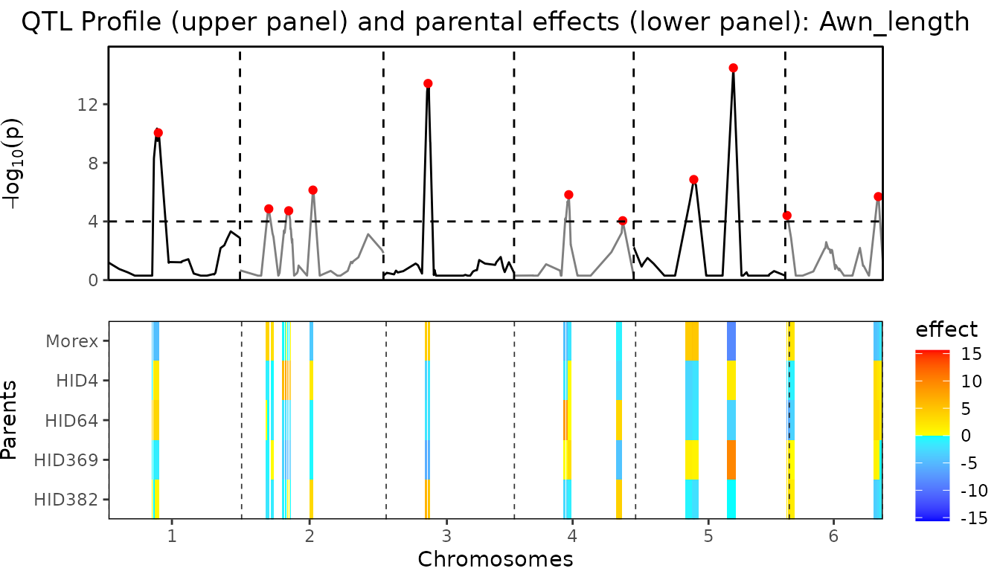

QTL Mapping in Multi-Parent Populations
Wenhao Li, Martin Boer, and Bart-Jan van Rossum
2025-02-11
Source:vignettes/QTLMapping_in_MultiParentPopulations.Rmd
QTLMapping_in_MultiParentPopulations.RmdThe statgenMPP package
The statgenMPP package is developed as an easy-to-use
package for QTL mapping in biparental and multi-parent populations. The
package has many ways of visualizing inputs and results.
This vignette describes in detail how to perform the IBD calculations and how to do QTL mapping using the IBD probabilities in a linear mixed model framework, see Li et al. (2021) and Li et al. (2022) for details. The Linear Model Equations are solved using the LMMsolver R package (Boer 2023). This will be illustrated using three example data sets. The first data set is a simulated NAM data set with three parents, that is relatively small and runs fast and is mainly used to show the functionality of the package. Then two data sets from literature are used to show the validity of the results from the package, first a maize data set, the dent panel of the EU-NAM maize project (Giraud et al. (2014)). The second data set is a barley data set for awn length described in Liller et al. (2017).
Example simulated data
As a first example for performing IBD calculations and QTL mapping for a multi-parent population we use a relatively simple simulated data set. The example contains simulated data for two F4DH populations. The population type F4DH is cross between two parents, followed by 3 generations of selfings, followed by a DH generation, see statgenIBD for details.
For the first population the parents where A and B, for the second the parents where A and C. The first population consists of 100 individuals, the second of 80 individuals. This is a simple example of a NAM population, having parent A as central parent. The data is simulated with three QTLs, on chromosome 1, 2, and 3. All necessary data for this population is available in the package.
Before doing QTL detection we compute IBD probabilities on a grid of
positions along the genome. This can be done using the
calcIBDMPP function in the statgenMPP package.
To perform IBD calculations a marker file is required for each of the
populations. These files should be a tab-delimited file with first
column ID identifying the genotype. The following columns should contain
marker information. The first rows should contain the parents used in
the cross. As an example, the file for the first cross, AxB, starts like
this:
| ID | M1_1 | M1_2 | M1_3 | M1_4 |
|---|---|---|---|---|
| A | 1 | 2 | 2 | 2 |
| B | 2 | 2 | 2 | 1 |
| AxB0001 | 1 | 2 | 2 | 1 |
| AxB0002 | 2 | 2 | 2 | 2 |
In this example markers M1_1 and M1_4 are segregating in the AxB
cross, M1_2 and M1_3 not.
A map file is also required. This should also be a tab-delimited file
with three columns, “marker name”, “chromosome” and “position”. The map
file cannot contain a header and has to be identical for all
crosses.
Phenotypic data can be added as a data.frame when
computing IBD probabilities. Such a data.frame should have
a first column “genotype” and all other columns have to be numerical.
For the simulated NAM population the data.frame with
phenotypic data starts like this:
| genotype | yield |
|---|---|
| AxB0001 | 9.89 |
| AxB0002 | 6.55 |
| AxB0003 | 7.90 |
| AxB0004 | 4.46 |
| AxB0005 | 5.21 |
| AxB0006 | 5.27 |
The phenotypic data only contains a single trait, yield. When
performing IBD calculations and specifying phenotypic data, the
phenotypic data will be combined with computed IBD probabilities. For
this, the genotype specified in the ID column in the marker file(s) will
be matched with the genotype in the genotype column in the
data.frame with phenotypic information. Phenotypic data for
all crosses can either be added from a single data.frame
containing phenotypic data for all crosses, or a list of
data.frames each containing phenotypic data for a single
cross.
## Specify files containing markers.
# One file for each of the two crosses.
markerFiles <- c(system.file("extdata/multipop", "AxB.txt",
package = "statgenMPP"),
system.file("extdata/multipop", "AxC.txt",
package = "statgenMPP"))
## Specify file containing map.
# Both crosses use the same map file.
mapFile <- system.file("extdata/multipop", "mapfile.txt",
package = "statgenMPP")
## Read phenotypic data
phenoDat <- read.delim(system.file("extdata/multipop", "AxBxCpheno.txt",
package = "statgenMPP"))
# Check contents.
head(phenoDat)
#> genotype yield
#> 1 AxB0001 9.89
#> 2 AxB0002 6.55
#> 3 AxB0003 7.90
#> 4 AxB0004 4.46
#> 5 AxB0005 5.21
#> 6 AxB0006 5.27
## Perform IBD calculations.
ABCMPP <- calcIBDMPP(crossNames = c("AxB", "AxC"),
markerFiles = markerFiles,
pheno = phenoDat,
popType = "F4DH",
mapFile = mapFile,
evalDist = 5)With calcIBDMPP IBD probabilities are computed on a grid
for each of the crosses separately and then combined into a single
output object. The value of evalDist can be used to specify
the maximum distance (in cM) between two evaluation points on the grid.
The exact distance depends on the length of the chromosomes. The output
is stored in an object of class gDataMPP (genomic Data for
Multi Parent Populations) in which information about map, markers, and
phenotypic data is combined. With the summary function we
can get some insight in this information.
## Print summary
summary(ABCMPP)
#> map
#> Number of markers: 95
#> Number of chromosomes: 5
#>
#> markers
#> Number of markers: 95
#> Number of genotypes: 180
#> Parents: A, B, C
#> pheno
#> Number of traits: 1
#> Traitnames: yield
#> Number of genotypes: 180
#>
#> crosses
#> AxB:100
#> AxC: 80To get a further idea about the population and the computed IBD
probabilities we can visualize the results. First we have a look at
structure of the pedigree of the population using
plotType = "pedigree" to get a general idea of what the
design looks like.
## Plot structure of the pedigree.
plot(ABCMPP, plotType = "pedigree")
Next we look at the genetic map using
plotType = "genMap". This will display the genetic map of
the population showing the length of each of the chromosomes and
indicating the positions where the IBD probabilities were calculated.
Optionally it is possible to highlight one or more markers using
highlight argument.
## Plot genetic map.
# Highlight marker on chromosome 3 at position 40.
plot(ABCMPP, plotType = "genMap", highlight = "EXT_3_40")Finally we visualize the computed IBD probabilities across the genome
for a selected genotype using plotType = "singleGeno". This
plot will show the IBD probabilities for all parents for all positions
on the genome for the selected genotype.
## Plot IBD probabilities for genotype AxB0001.
plot(ABCMPP, plotType = "singleGeno", genotype = "AxB0001")Using the computed IBD probabilities we can now do the actual QTL
Mapping using the selQTLMPP function. First we perform a
SQM by setting maxCofactors = 0. Our trait of interest,
yield, is specified in the trait argument of the
function.
## Perform Single-QTL Mapping.
ABCSQM <- selQTLMPP(MPPobj = ABCMPP,
trait = "yield",
maxCofactors = 0)The results of the SQM can be plotted using the plot
function with plotType = "QTLProfile".
## Plot QTL Profile for ABC SQM.
plot(ABCSQM, plotType = "QTLProfile")Already from the SQM the position of the three simulated QTLs is
quite clear. We can get an even better result using MQM. For that, again
we use the selQTLMPP function. We don’t specify the
maxCofactors to let the algorithm determine the number of
cofactors based on the threshold and QTLwindow. As long as new markers
are found with a
value above threshold and the maximum number of cofactors
is not reached, a new round of scanning is done. In the new round of
scanning the marker with the highest
value from the previous round is added to the cofactors. Based on the
profile plot for the SQM the threshold is set to 3. The
QTLwindow is not specified and therefore left at its
default value of 10cM.
## Perform Multi-QTL Mapping.
ABCMQM <- selQTLMPP(MPPobj = ABCMPP,
trait = "yield",
threshold = 3)It is possible to include a polygenic term in the model to control
for background genetic information. To do this a list of chromosome
specific kinship matrices can either be computed by the
selQTLMPP function or specified by the user. In the former
case it is enough to specify computeKin = TRUE. When doing
so the kinship matrix is computed by averaging
over all markers, where
is the genotype
parents matrix with IBD probabilities for the marker. A list of
precomputed chromosome specific kinship matrices can be specified in
K. Note that adding a kinship matrix to the model increases
the computation time a lot, especially for large populations. It is
advisable to use parallel computing when doing so (see Parallel computing).
## Perform Multi-QTL Mapping.
# Compute kinship matrices.
ABCMQM_kin <- selQTLMPP(MPPobj = ABCMPP,
trait = "yield",
threshold = 3,
computeKin = TRUE)Next we can visualize the results. First we plot the positions of the
QTLs found on the genetic map. This will produce a plot similar the the
genetic map plot we have seen before, but now the QTLs will be
highlighted. This plot can be made by specifying
plotType = "QTLRegion"
## Plot QTL Profile for ABC MQM.
plot(ABCMQM, plotType = "QTLRegion")As for the SQM we can also plot the QTL profile. The QTLs found will be highlighted in the profile in red.
## Plot QTL Profile for ABC MQM.
plot(ABCMQM, plotType = "QTLProfile")It is also possible to plot the size of the parental effects for each
of the QTLs found. Positive effects of a parent on the trait will be
indicated by shades of red, negative effects by shades of blue. The
stronger the color, the larger the effect for the specific parent is.
This plot can be made using plotType = "parEffs".
## Plot QTL Profile for ABC MQM.
plot(ABCMQM, plotType = "parEffs")
Also a combined plot of the QTL profile and the parental can be made.
In this plot the two previous plots are plotted above each other with
the chromosomes and positions aligned to allow for easily getting an
overview of which effect belongs to which QTL in the QTL profile. This
plot can be made using plotType = "QTLProfileExt".
## Plot QTL Profile for ABC MQM.
plot(ABCMQM, plotType = "QTLProfileExt")Finally a plot of the confidence intervals around the estimated
parental effects can be made for each of the QTLs found. This plot can
be made using plotType = "parCIs". The plot will show per
QTL the effects for each of the parents, as well as the confidence
intervals around those effects (calculated as
).
Confidence intervals that don’t contain the origin, are assumed to be
significant and are shown in red for positive effects and in blue for
negative effects. All other intervals are shown in black.
## Plot confidence intervals for parental effects for ABC MQM.
plot(ABCMQM, plotType = "parCIs")
A summary of the QTL-analysis gives a short overview containing the total number of markers and the number of QTLs found. Also for all QTL their position on the chromosome is shown as well as the nearest marker on the original map, the explained variance and the effects and the standard errors of all parents.
## Print summary
summary(ABCMQM)
#> Trait analysed: yield
#>
#> Data are available for 95 markers.
#> Threshold: 3
#>
#> Number of QTLs: 3
#>
#> evalPos chr pos mrkNear minlog10p varExpl eff_A eff_B eff_C se_eff_A se_eff_B
#> EXT_1_25 1 25 M1_3 16.45 0.242 -1.417 0.859 0.558 0.145 0.239
#> EXT_2_75 2 75 M2_8 8.59 0.217 0.833 -1.327 0.495 0.166 0.238
#> EXT_3_65 3 65 M3_7 11.69 0.287 0.984 0.560 -1.544 0.139 0.219
#> se_eff_C
#> 0.212
#> 0.274
#> 0.214From the output of selQTLMPP the p-Values and effects
for all markers can be extracted. They are stored in a
data.table within the output object. The example below
shows how to extract them. The output will contain columns evalPos, chr
and pos with name, chromosome number and evaluation position and columns
pValue and eff_par1, eff_par2, eff_par.. with the effects of all parents
for that marker.
## Extract results of QTL mapping.
ABCMQMres <- ABCMQM$GWAResult$yield
head(ABCMQMres[, 1:8])
#> NULLIt is also possible to only extract the markers that are either QTLs
or within the window of one of the selected QTLs, as specified when
calling the selQTLMPP function. As for the full results,
this information in stored in the output as a data.table
that can be extracted as shown below. The columns in this
data.table are identical to those in the full results
except for an additional column at the end, snpStatus, that shows
whether a marker is a QTL or within the window of a QTL.
Example maize
As a second example we use data from a maize NAM population described in Giraud et al. (2014). The NAM population consists of 10 bi-parental doubled haploid (DH) crosses with central parent F353. The total population consists of 841 individuals. Several traits were measured in four locations across Europe. We calculated the best linear unbiased estimations (BLUEs) of those traits using the R package statgenSTA. As an example, we perform QTL mapping for only the mean value of the number of days to silking (“mean_DtSILK”) across all locations. The data for this population is available from the package in zipped format.
As for the simulated data, before doing QTL detection we first compute IBD probabilities on a grid of positions along the genome.
## Define names of crosses.
crosses <- paste0("F353x", c("B73", "D06", "D09", "EC169", "F252", "F618",
"Mo17", "UH250", "UH304", "W117"))
head(crosses)
#> [1] "F353xB73" "F353xD06" "F353xD09" "F353xEC169" "F353xF252" "F353xF618"
## Specify files containing crosses.
## Extract them in a temporary directory.
tempDir <- tempdir()
crossFiles <- unzip(system.file("extdata/maize/maize.zip", package = "statgenMPP"),
files = paste0(crosses, ".txt"), exdir = tempDir)
## Specify file containing map.
mapFile <- unzip(system.file("extdata/maize/maize.zip", package = "statgenMPP"),
files = "map.txt", exdir = tempDir)
## Read phenotypic data.
phenoFile <- unzip(system.file("extdata/maize/maize.zip", package = "statgenMPP"),
files = "EUmaizePheno.txt", exdir = tempDir)
phenoDat <- read.delim(phenoFile)
head(phenoDat[, 1:5])
#> genotype INR_DMY KWS_DMY Syngenta_DMY TUM_DMY
#> 1 CFD02-003 182 NA 173 NA
#> 2 CFD02-006 172 201 159 243
#> 3 CFD02-010 208 237 159 228
#> 4 CFD02-024 185 219 161 214
#> 5 CFD02-027 206 226 185 221
#> 6 CFD02-036 180 223 163 216
## Perform IBD calculations.
maizeMPP <- calcIBDMPP(crossNames = crosses,
markerFiles = crossFiles,
pheno = phenoDat,
popType = "DH",
mapFile = mapFile,
evalDist = 5)We then have a look at the summary and some of the plots to get an overview of the pedigree and the computed probabilities.
## Print summary
summary(maizeMPP)
#> map
#> Number of markers: 262
#> Number of chromosomes: 10
#>
#> markers
#> Number of markers: 262
#> Number of genotypes: 841
#> Parents: F353, B73, D06, D09, EC169, F252, F618, Mo17, UH250, UH304, W117
#> pheno
#> Number of traits: 30
#> Traitnames: INR_DMY, KWS_DMY, Syngenta_DMY, TUM_DMY, ..., mean_NBPL
#> Number of genotypes: 841
#>
#> crosses
#> F353xB73 : 64
#> F353xD06 : 99
#> F353xD09 :100
#> F353xEC169: 66
#> F353xF252 : 96
#> F353xF618 :104
#> F353xMo17 : 53
#> F353xUH250: 94
#> F353xUH304: 81
#> F353xW117 : 84
## Plot structure of the pedigree.
plot(maizeMPP, plotType = "pedigree")Now we can use the computed IBD probabilities to perform SQM.
## Perform Single-QTL Mapping.
maizeSQM <- selQTLMPP(MPPobj = maizeMPP,
trait = "mean_DtSILK",
maxCofactors = 0)We plot the QTL profile for the SQM to get an idea of reasonable
values to use for the threshold and QTLwindow
in the MQM that we do next.
## Plot QTL Profile for maize SQM.
plot(maizeSQM, plotType = "QTLProfile")Based on the plot for the SQM the threshold is set to 5
to restrict a bit the number of QTLs that will be detected in the MQM.
The QTLwindow is not specified and therefore left at its
default value of 10cM.
## Perform Multi-QTL Mapping.
maizeMQM <- selQTLMPP(MPPobj = maizeMPP,
trait = "mean_DtSILK",
threshold = 5)We only look at the combined plot of the QTL Profile and the parental effects. This should give us the most direct insight in the QTLs found and the effects the different parents in the crosses have.
## Plot QTL Profile for maize MQM.
plot(maizeMQM, plotType = "QTLProfileExt")
Finally we can have a look at the confidence intervals around the parental effects for the QTLs found.
## Plot confidence intervals for parental effects for maize MQM.
plot(maizeMQM, plotType = "parCIs")
Example barley
Instead of performing IBD calculations directly with the package, it
is also possible to import IBD probabilities computed using RABBIT
software (Zheng, Boer,
and Van Eeuwijk 2014, 2015, 2018). The main advantage of using
RABBIT for IBD calculations is that it can handle complex pedigree
populations and therefore can also be used in cases where the population
structure is more complex than those that can be computed using
statgenIBD, e.g. in the maize NAM population described
before.
As an example we use a barley population described in Liller et al. (2017). This MPP design consists of 5 parents. Four wild parents were crossed with the cultivar Morex and then backcrossed with Morex once. Individuals from the four families from the backcrosses were then crossed with each other as in a full diallel design, which generated six F6 families through five generations of selfing. The trait of interest for this population is awn length (“Awn_length”). As for the maize NAM population, the data for this population is available in zipped format in the package.
RABBIT output can be read using the readRABBITMPP
function in statgenMPP. This has as input the standard
RABBIT output summary file and the pedigree file that needs to be
provided to RABBIT as well. This pedigree file is an optional input and
is only used for plotting the pedigree structure of the population.
Without it QTL mapping can still be performed. As for
calcIBDMPP the phenotypic data has to be provided as a
data.frame. This data.frame has been included
in the package.
## Specify files containing RABBIT output.
## Extract in a temporary directory.
tempDir <- tempdir()
inFile <- unzip(system.file("extdata/barley/barley_magicReconstruct.zip",
package = "statgenMPP"), exdir = tempDir)
## Specify pedigree file.
pedFile <- system.file("extdata/barley/barley_pedInfo.csv",
package = "statgenMPP")
## Read phenotypic data.
data("barleyPheno")
## read RABBIT output.
barleyMPP <- readRABBITMPP(infile = inFile,
pedFile = pedFile,
pheno = barleyPheno)As for the maize example we can summarize and plot the imported data to get a first idea of its content.
## Summary.
summary(barleyMPP)
#> map
#> Number of markers: 355
#> Number of chromosomes: 7
#>
#> markers
#> Number of markers: 355
#> Number of genotypes: 916
#> Parents: Morex, HID4, HID64, HID369, HID382
#> pheno
#> Number of traits: 1
#> Traitnames: Awn_length
#> Number of genotypes: 916
#>
#> crosses
#> 50:149
#> 51:152
#> 52:157
#> 53:130
#> 54:167
#> 55:161Performing SQM and MQM for imported RABBIT output works in the same way as for IBD probabilities computed directly in the package. Since a full scan would take long we precomputed the results and included them in the package.
## Perform Multi-QTL Mapping with threshold 4.
barleyMQM <- selQTLMPP(MPPobj = barleyMPP,
trait = "Awn_length",
threshold = 4)There is a very large QTL on chromosome 7. To be able to more clearly distinguish the differences between the other QTLs they are plotted separately.
## Plot QTL Profile for barley MQM - chromosome 1-6.
plot(barleyMQM, plotType = "QTLProfileExt", chr = 1:6)
## Plot QTL Profile for barley MQM - chromosome 7.
plot(barleyMQM, plotType = "QTLProfileExt", chr = 7)Finally we can have a look at the confidence intervals around the parental effects for the QTLs found.
## Plot confidence intervals for parental effects for maize MQM.
plot(barleyMQM, plotType = "parCIs")
The QTLs found are very similar in both position, size and effects as described in Liller et al. (2017). This can also be clearly seen by comparing the summary of the MQM with the table of effects in this paper.
## Summary.
summary(barleyMQM)
#> Trait analysed: Awn_length
#>
#> Data are available for 355 markers.
#> Threshold: 4
#>
#> Number of QTLs: 12
#>
#> evalPos chr pos mrkNear minlog10p varExpl eff_Morex eff_HID4 eff_HID64 eff_HID369
#> 2_1053 1 47.06 2_1053 10.05 0.0212 -4.4815 1.72 3.563 -1.425
#> 2_1187 2 27.21 2_1187 4.86 0.0121 3.7109 -1.01 -0.200 -0.815
#> 1_1522 2 46.06 1_1522 4.73 0.0459 -0.0572 7.25 -2.554 -5.226
#> 2_0340 2 68.99 2_0340 6.14 0.0208 -3.8297 1.96 -0.811 -0.437
#> 1_1501 3 42.17 1_1501 13.42 0.0526 4.6614 -2.88 -1.654 -5.951
#> 1_1070 4 51.72 1_1070 5.83 0.0554 -4.7880 -1.89 8.331 0.844
#> 1_0611 4 102.75 1_0611 4.05 0.0299 -0.9099 -2.47 3.531 -4.200
#> 2_0645 5 56.84 2_0645 6.86 0.0268 5.2156 -2.56 -1.824 1.227
#> 1_0094 5 94.26 1_0094 14.48 0.0939 -8.4484 1.70 -3.081 9.928
#> 1_0120 6 1.67 1_0120 4.41 0.0372 2.6349 -1.39 -5.899 1.992
#> 2_0687 6 88.03 2_0687 5.70 0.0344 -4.3277 2.90 3.666 1.144
#> 1_1012 7 121.04 1_1012 65.39 0.2648 11.3779 5.77 -9.658 7.651
#> eff_HID382 se_eff_Morex se_eff_HID4 se_eff_HID64 se_eff_HID369 se_eff_HID382
#> 0.629 0.709 1.35 1.07 1.11 1.32
#> -1.681 0.774 1.30 1.18 1.31 1.33
#> 0.583 0.846 1.51 1.50 1.51 1.46
#> 3.119 1.002 1.47 1.49 2.72 1.39
#> 5.827 0.769 1.49 1.38 1.36 1.37
#> -2.502 0.929 1.47 2.50 1.28 1.55
#> 4.050 0.797 1.40 1.81 1.45 1.23
#> -2.061 0.973 2.21 1.86 1.48 1.40
#> -0.102 0.985 1.70 1.64 2.24 1.83
#> 2.665 1.223 1.72 1.74 3.59 1.74
#> -3.387 1.129 1.90 1.59 3.07 1.46
#> -15.136 0.865 1.76 1.84 1.96 1.37Parallel computing
To improve performance, it is possible to use parallel computing to
perform the QTL mapping. To do this, a parallel back-end has to be
specified by the user, e.g. by using registerDoParallel
from the doParallel package (see the example below).
Besides, in the selQTLMPP function the argument
parallel has to be set to TRUE. With these
settings the computations are done in parallel per chromosome. Of
course, this doesn’t have an effect on the output. The MQM below gives
exactly the same results as the non-parallel one described earlier in
the vignette.
## Register parallel back-end with 2 cores.
doParallel::registerDoParallel(cores = 2)
## Perform Multi-QTL Mapping.
ABCMQM_Par <- selQTLMPP(MPPobj = ABCMPP,
trait = "yield",
threshold = 3,
parallel = TRUE)Summary
The properties of using statgenMPP for QTL mapping in MPPs have been shown with several examples we demonstrated here. This easy-to-use R package, integrating the HMM method for IBD calculation and the mixed-model approach for QTL mapping, provides us with a general framework to estimate multi-allelic QTL effects in terms of parent origins.